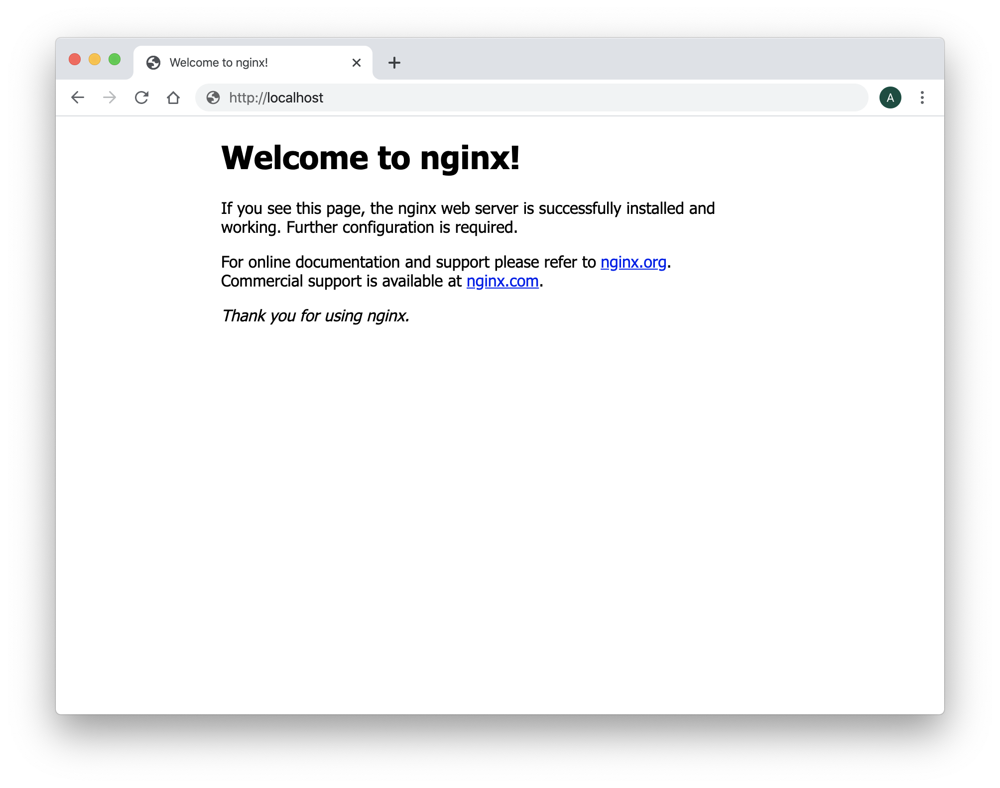
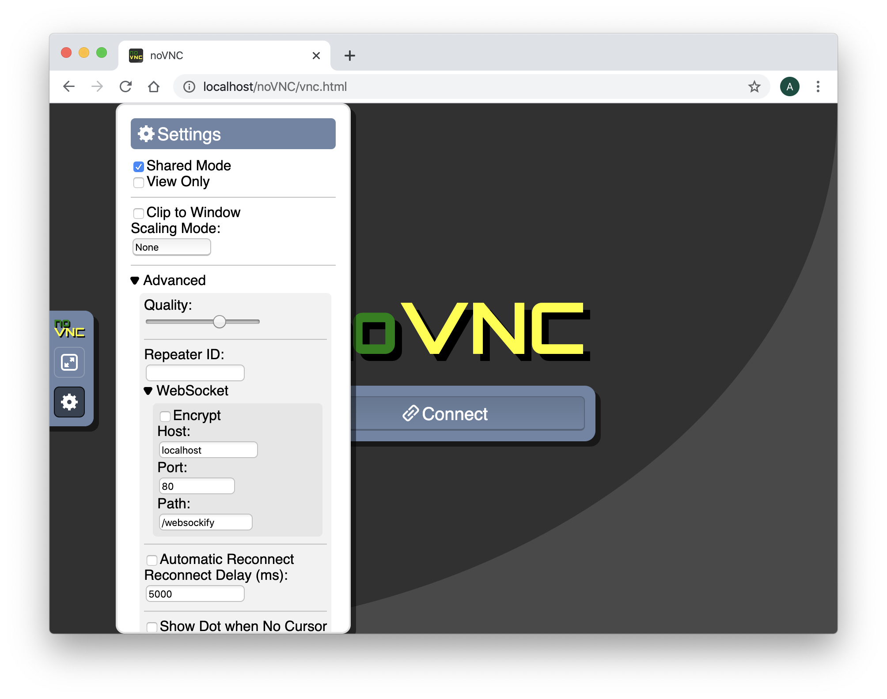
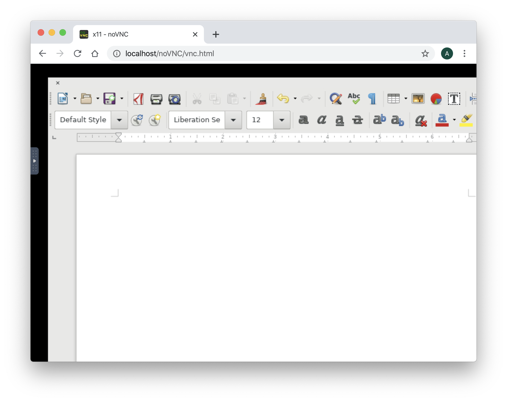
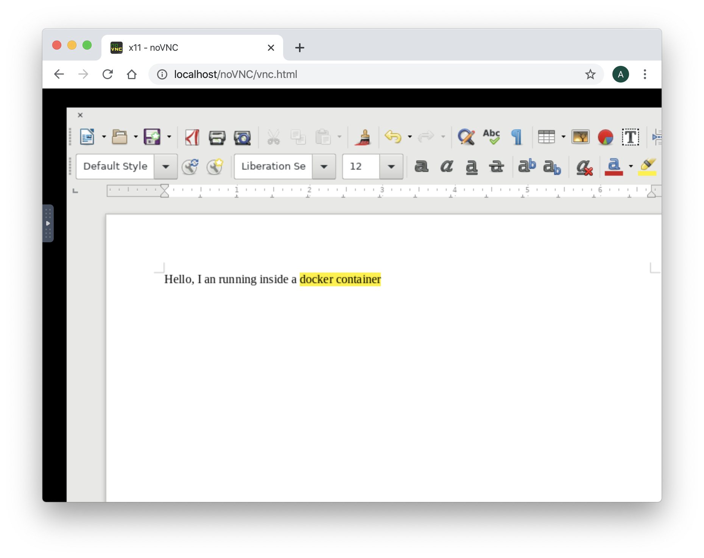
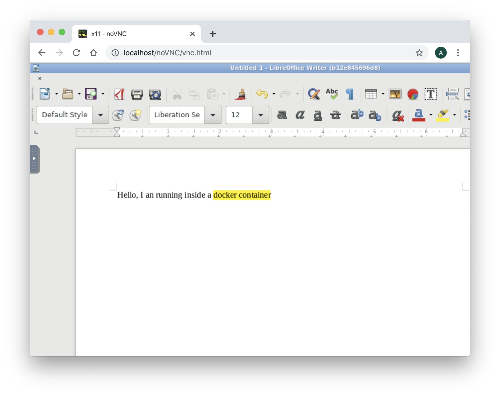

Use noVNC as VNC Client
Requirements
- A running dockerd last version
- An access to the docker public registry
- An access to the ubuntu repository
- An access to the github website to run git clone command
- An access to the bintray.com website to download a file
AbcDeskopio use the amazing projet noVNC. noVNC is a VNC client JavaScript library. Before you start using noVNC get some information about it:
noVNC description
noVNC is an open source VNC client. noVNC is both a VNC client JavaScript library as well as an application built on top of that library. noVNC runs well in any modern browser including mobile browsers (iOS and Android). Many companies, projects and products have integrated noVNC including OpenStack, OpenNebula, LibVNCServer, and ThinLinc. See the Projects and Companies wiki page for a more complete list with additional info and links.
Browser Requirements
noVNC uses many modern web technologies so a formal requirement list is not available. However these are the minimum versions we are currently aware of:
- Chrome 49, Firefox 44, Safari 11, Opera 36, IE 11, Edge 12
Features
- Supports all modern browsers including mobile (iOS, Android)
- Supported VNC encodings: raw, copyrect, rre, hextile, tight, tightPNG
- Supports scaling, clipping and resizing the desktop
- Local cursor rendering
- Clipboard copy/paste
- Translations
- Licensed mainly under the MPL 2.0, see the license document for details
Create a shared volume myshared
Before creating containers, we need a shared volume, to share data and unix socket between containers. Run the docker volume create command.
docker volume create myshared
Start the first container myx11server
Start the first graphical container named myx11server and forward the tcp port 6081 to the 6081 container tcp port.
- The tcp port 6081 will be use later by ws2tcp nodejs server.
- The volume myshared is mounted to /tmp
Note: We do not need the default 5900 VNC tcp port any more.
docker run -it -v myshared:/tmp --name myx11server -p 6081:6081 ubuntu:latest bash
You should see a prompt like :
root@6de36e574877:/#
Install the package wget Install the library files for tigervnc.
Package list:
- libx11-6 xkb-data x11-xkb-utils xauth libfile-readbackwards-perl netbase libaudit1 libbsd0 libgcrypt20 libgl1 libgnutls30 libjpeg8 libpam0g libpixman-1-0 libselinux1 libstdc++6 libsystemd0 libunwind8 libxau6 libxdmcp6 libxfont2 zlib1g libgl1-mesa-dri xfonts-base x11-xserver-utils xfonts-100dpi xfonts-scalable
Those packages are used by tigervnc. We need to install them.
apt-get update
apt-get install -y wget
apt-get install -y libx11-6 xkb-data x11-xkb-utils xauth libfile-readbackwards-perl netbase libaudit1 libbsd0 libgcrypt20 libgl1 libgnutls30 libjpeg8 libpam0g libpixman-1-0 libselinux1 libstdc++6 libsystemd0 libunwind8 libxau6 libxdmcp6 libxfont2 zlib1g libgl1-mesa-dri xfonts-base x11-xserver-utils xfonts-100dpi xfonts-scalable
Download the last tigervnc X11 graphics server from the bintray.com web site
wget "https://bintray.com/tigervnc/stable/download_file?file_path=tigervnc-1.10.1.x86_64.tar.gz" -O tigervnc-1.10.1.x86_64.tar.gz
Untar the tigervnc-1.10.1.x86_64.tar.gz file in the container's root file system
cd /
tar -xvf tigervnc-1.10.1.x86_64.tar.gz
cp -r /tigervnc-1.10.1.x86_64/usr/* /usr/
Start the tigervnc release 1.10. The tigervnc release 1.10 support the option rfbunixpath used by ws-tcp-bridge in next section
Xvnc :0 -rfbunixpath /tmp/.x11vnc -SecurityTypes=none &
You should read the output
Xvnc TigerVNC 1.10.0 - built Dec 20 2019 07:12:07
Copyright (C) 1999-2019 TigerVNC Team and many others (see README.rst)
See https://www.tigervnc.org for information on TigerVNC.
Underlying X server release 12001000, The X.Org Foundation
Tue Mar 3 11:05:48 2020
vncext: VNC extension running!
vncext: Listening for VNC connections on /tmp/.x11vnc (mode 0600)
vncext: created VNC server for screen 0
Check that the Xvnc TigerVNC release is 1.10.0.
Great, you have installed an X11 server inside a docker container, and the Xvnc server is listening for VNC connections on /tmp/.x11vnc.
Install the ws-tcp-bridge
ws-tcp-bridge translate websocket to tcp and have to listen on websocket tcp port 6081 and forward to local unix socket unix:/tmp/.x11vnc.
ws-tcp-bridge is a nodejs server, then we need to install nodejs and npm.
Before, install the package gcc g++ make curl
apt-get install -y gcc g++ make curl
Install nodejs and npm
curl -sL https://deb.nodesource.com/setup_13.x | bash -
apt-get install -y nodejs
Install ws-tcp-bridge
npm install ws-tcp-bridge -g
Start ws-tcp-bridge with the parameters --method=ws2tcp --lport 6081 --rhost=unix:/tmp/.x11vnc in background
Add the
&at the end of the command line to run this process in background
/usr/bin/ws-tcp-bridge --method=ws2tcp --lport 6081 --rhost=unix:/tmp/.x11vnc &
You should read on the standard output
proxy mode ws -> tcp
forwarding port 6081 to unix:/tmp/.x11vnc
Great, ws-tcp-bridge is running and forward websocket to Xvnc unix socket
Get the ip address on your first container myx11server
On the container myx11server, to get the container local IP Address, install the package net-tools package
apt-get install -y net-tools
And run the ifconfig command
ifconfig eth0
eth0: flags=4163<UP,BROADCAST,RUNNING,MULTICAST> mtu 1500
inet 172.17.0.2 netmask 255.255.0.0 broadcast 172.17.255.255
ether 02:42:ac:11:00:02 txqueuelen 0 (Ethernet)
RX packets 65149 bytes 95569807 (95.5 MB)
RX errors 0 dropped 0 overruns 0 frame 0
TX packets 20880 bytes 1159982 (1.1 MB)
TX errors 0 dropped 0 overruns 0 carrier 0 collisions 0
Write here the ip address of your container myx11server:
IP Address of myx11server _ . . _ .
Create a new container webserver
Open a new shell window and start a new docker container named mywebserver, forward the tcp port 80 to the container tcp port 80.
docker run -it --name mywebserver -p 80:80 ubuntu:latest
You should see a prompt like:
root@96df62a73e4f:/#
Install nginx webserver, run the command
apt-get update
apt-get install -y nginx-extras
Install the git and vim package, run the command
apt-get install -y git vim
Clone the novnc git on github.com, inside the nginx's root directory.
cd /var/www/html
git clone https://github.com/novnc/noVNC.git
You should read on the standart output
Cloning into 'noVNC'...
remote: Enumerating objects: 26, done.
remote: Counting objects: 100% (26/26), done.
remote: Compressing objects: 100% (21/21), done.
remote: Total 10395 (delta 8), reused 13 (delta 5), pack-reused 10369
Receiving objects: 100% (10395/10395), 9.01 MiB | 7.15 MiB/s, done.
Resolving deltas: 100% (7310/7310), done.
Start the nginx web server
nginx
The web server nginx is running in backgound.
Great, nginx web server is running, now we need to configure the proxy pass rule with the myx11server container's ip address.
Check that the container webserver can ping the container myx11server
Install the ping command, run the command
apt-get install -y iputils-ping
Get the myx11server container's ip address write before and replace xxx.xxx.xxx.xxx with the myx11server container's ip address
ping -c 5 xxx.xxx.xxx.xxx
In this example, i replace xxx.xxx.xxx.xxx by 172.17.0.2
ping -c 5 172.17.0.2
PING 172.17.0.2 (172.17.0.2) 56(84) bytes of data.
64 bytes from 172.17.0.2: icmp_seq=1 ttl=64 time=0.108 ms
64 bytes from 172.17.0.2: icmp_seq=2 ttl=64 time=0.365 ms
64 bytes from 172.17.0.2: icmp_seq=3 ttl=64 time=0.206 ms
64 bytes from 172.17.0.2: icmp_seq=4 ttl=64 time=0.181 ms
64 bytes from 172.17.0.2: icmp_seq=5 ttl=64 time=0.206 ms
--- 172.17.0.2 ping statistics ---
5 packets transmitted, 5 received, 0% packet loss, time 4074ms
rtt min/avg/max/mdev = 0.108/0.213/0.365/0.084 ms
The container webserver should receive package from the myx11server container
Edit the nginx configuration file
Edit the nginx configuration file /etc/nginx/sites-enabled/default with the vim editor.
vim /etc/nginx/sites-enabled/default
In the server section, after the line location you should found :
location / {
# First attempt to serve request as file, then
# as directory, then fall back to displaying a 404.
try_files $uri $uri/ =404;
}
Add a /websockify route to proxyfied the websocket http request to your myx11server container.
location = /websockify {
proxy_buffering off;
proxy_set_header X-Forwarded-For $proxy_add_x_forwarded_for;
proxy_set_header Upgrade $http_upgrade;
proxy_set_header Connection "upgrade";
proxy_pass http://XXX.XXX.XXX.XXX:6081/;
}
You have to replace the line
proxy_pass http://XXX.XXX.XXX.XXX:6081/;
by the ip address of your myx11server container, for example replace http://XXX.XXX.XXX.XXX:6081/ with http://172.17.0.2:6081/
proxy_pass http://172.17.0.2:6081/;
The complete server section in the nginx file is for example
server {
listen 80 default_server;
listen [::]:80 default_server;
# SSL configuration
#
# listen 443 ssl default_server;
# listen [::]:443 ssl default_server;
#
# Note: You should disable gzip for SSL traffic.
# See: https://bugs.debian.org/773332
#
# Read up on ssl_ciphers to ensure a secure configuration.
# See: https://bugs.debian.org/765782
#
# Self signed certs generated by the ssl-cert package
# Don't use them in a production server!
#
# include snippets/snakeoil.conf;
root /var/www/html;
# Add index.php to the list if you are using PHP
index index.html index.htm index.nginx-debian.html;
server_name _;
location / {
# First attempt to serve request as file, then
# as directory, then fall back to displaying a 404.
try_files $uri $uri/ =404;
}
location = /websockify {
proxy_buffering off;
proxy_set_header X-Forwarded-For $proxy_add_x_forwarded_for;
proxy_set_header Upgrade $http_upgrade;
proxy_set_header Connection "upgrade";
proxy_pass http://172.17.0.2:6081/; # change this line
}
# pass PHP scripts to FastCGI server
#
#location ~ \.php$ {
# include snippets/fastcgi-php.conf;
#
# # With php-fpm (or other unix sockets):
# fastcgi_pass unix:/var/run/php/php7.0-fpm.sock;
# # With php-cgi (or other tcp sockets):
# fastcgi_pass 127.0.0.1:9000;
#}
# deny access to .htaccess files, if Apache's document root
# concurs with nginx's one
#
#location ~ /\.ht {
# deny all;
#}
}
Now, it's time to reload your nginx configuration, by running the command
nginx -s reload
Connect to your nginx website
Run a web browser like Google Chrome or Firefox and go to your nginx website. If you run the nginx website on a separated host replace the name with your hostname or his ip address.
Go to the URL http://localhost or the ip address of your own server
In this exercice in use
localhostin the screenshot because all containers are running on my desktop, you may have to replace localhost by ip address, or thefully qualified domain nameof your own server.
http://localhost
or
http://YOUR_SERVER_IP_ADDRESS
You should read the Welcome to nginx! message in your web browser

Go to the noVNC URL http://localhost/noVNC/vnc.html
http://localhost/noVNC/vnc.html
Remember, remplace localhost by your
fully qualified domain nameif need
You should read the Welcome to nginx! message in your web browser

To change the connection settings, click on the settings icon and choose Advanced You have to fill the WebSocket properties as follow:
- The Encrypt is
not checked - Set the Host as
localhost(or your host ip address where your contianers are running ) - Set the Port to
80 - Set the Path to
/websockify

Then, press the Connect Button
Install libreoffice as a docker application
On your host, where your container myx11server is running. Open a new shell window and start a new docker container named mylibreoffice.
docker run -it -v myshared:/tmp --name mylibreoffice ubuntu:latest
You should see a prompt like :
root@96df62a73e4f:/#
To install libreoffice application, run the install libreoffice command in your mylibreoffice container.
apt-get update
apt-get install -y libreoffice
Run the soffice command to start Libreoffice
export DISPLAY=:0.0
soffice --writer
You should read the output
(soffice:7412): dbind-WARNING **: 16:32:03.928: Couldn't connect to accessibility bus: Failed to connect to socket /tmp/dbus-HN3KrNpoAq: Connection refused
On the web browser, the application Libreoffice Writer should appear.

Type some text data like 'Hello, I am running inside a docker container'

Install the windows manager openbox on your myx11server container
To move, resize, close, the windows applications, we need a windows manager. abcdesktop is the windows manager. OpenBox is a lightweight, powerful, and highly configurable stacking window manager with extensive standards support.
Run the install openbox command in your myx11server container.
apt-get install -y openbox
Set the DISPLAY environment variable to :0.0 and start openbox in background
export DISPLAY=:0.0
openbox &

Now, you can move the Libreoffice windows. All windows are decorated.
Great you have installed the novnc gateway, and you just need a HTML Web browser to use a Libreoffice